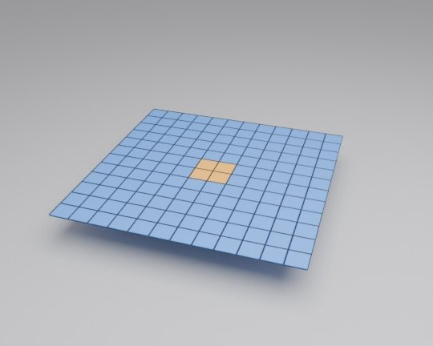
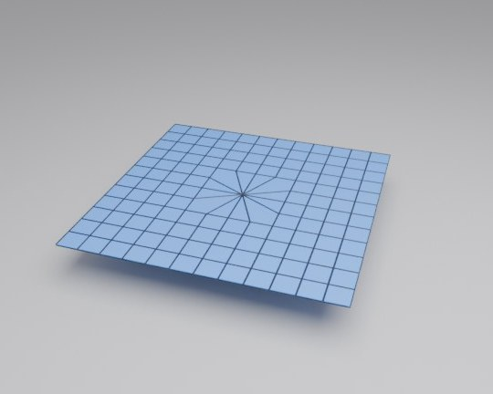

Bonus lesson
Merge Vertices
Merge joins all the selected vertices into one single vertex. It works in Edit Mode. Press M, or find it under Mesh › Merge, or in the context menu. A small menu pops up so you can choose where the remaining vertex goes.


The options
The manual lists these choices in the menu:
- At Center puts the remaining vertex at the center of the selection. It works in all select modes.
- At Cursor puts the remaining vertex at the 3D Cursor. It works in all select modes.
- Collapse merges each island of selected vertices (connected by selected edges) onto its own median center. You get one vertex per island.
- At First puts the remaining vertex where the first selected vertex was. It only works in Vertex select mode.
- At Last puts the remaining vertex where the last selected (active) vertex was. It only works in Vertex select mode.
Merging deletes some edges and faces. The manual says Blender does what it can to keep edges and faces that were only partly involved. At First and At Last need the selection order to be saved. The order is lost, for example, after you change the select mode.
If UVs is ticked in the Adjust Last Operation panel, existing UV coordinates are corrected to avoid distorting the image. The manual's By Distance section is still marked as unwritten, so this lesson does not cover it.
Read the manual page on Merge.
Try it
This exercise is our own suggestion and has not been run step by step in the GUI. Add a plane, enter Edit Mode and subdivide it a few times. Select a few neighboring vertices, press M and choose At Center. Press Ctrl+Z, then try At Cursor and compare. Use Ctrl+Z to undo.